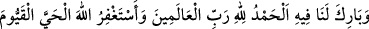
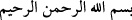
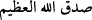

“Allah Teâlâ doğru söylemiş ve onun Rasûlü (s.a.) de tebliğde bulunmuştur.
Allah’ım onunla bize fayda ver ve bize onu mübârek kıl. Hamd âlemlerin Rabbi olan
Allah’a âiddir. Hayy ve Kayyûm olan Allah’tan mağfiret dilerim” desin.
Yahûdilerin büyük âlimlerinden Abdullah bin Selâm’ın sorularından biri de şu idi:
“–Ya Muhammed, Kur’ân’ın başlangıcı ve sonu nedir, bana haber ver?”
Rasulullah (s.a.) Efendimiz de şöyle cevap vermişti:
“–Başlangıcı
, sonu
’dir.”
O da, “Doğru söyledin” dedi.
Harîdetü’l-acâib’de şöyle geçer: Yani, okuyucu bunu hatim esnâsında söylemelidir.
Değilse Kur’ân’ın sonu Nâs sûresidir.
Kur’ân’ın “bâ” harfi ile başlayıp “sin” harfi ile bitmesinde Farsça “Bes/yeter”
ifâdesine işâret vardır. O da “Hasb/yeter” demektir. Yani iki harf arasında sana
verdiklerimiz iki kâinat için sana yeter, mânâsına gelir. Nitekim Hakîm Senâî (r.a)
şöyle demiştir:
Neden Kur’ân’ın evveli “bâ” sonu ise “sîn” oldu?
“Dîn yolunda rehber olarak sana Kur’ân bes (yeter)!” demek istiyor.
Kadîr Mevlâm kendisini te’yîd eylesin, fakîr (Bursevî) der ki: Allah Teâlâ’nın
Kur’ân-ı Kerîm’e besmele ile başlayıp onu “en-Nâs” ile bitirmesinde, kelâmın ilâhî
mertebelerin en sonuncusu olması gibi insanın da kevnî mertebelerin en sonuncusu
olmasına işâret vardır. Çünkü kevnî mertebelerin başlangıcı akl-ı evveldir. Sonu ise
insandır. O mertebelerin toplamı hece harfleri kadardır. İlâhî mertebelerin evveli
hayattır. Sonuncusu ise kelâmdır. Onun için de doğan çocukta ilk ortaya çıkan sıfat
hayattır. Bu da cenin iken olur. Son ortaya çıkan ise kelâm/konuşmadır. O da vaz‘
olunmuştur Çünkü Allah Teâlâ Âdem (a.s)’ı kendi sûretinde yaratmıştır. Kur’ânî
kelâmın evveli Allah’ın ismidir. O mebde-i evveldir. Sonu ise nâs/insanlardır. Çünkü
insan son mazhardır. Mübtedî, öğrenme bakımından derece derece yükselir ve en son
mebde-i evvele ve onun ism-i âlîsine ulaşır. Müntehî ise tilâvet bakımından nüzûl eder
ve en son alt tabakadaki insana ulaşır. Hakikati şudur: Allah Teâlâ celâen açık olarak
mebde’dir. İsticlâen/açığa çıkarma açısından da müntehâdır. O bidâyetsiz evvel ve
nihâyetsiz âhirdir.
İbn Kesîr (r.a)’ten şöyle rivâyet olunmuştur: Kişi Kur’ân hatminin sonunda Nas’a
ulaştığında Fâtiha sûresini ve Kûfî sayıma göre Bakara sûresinin ilk beş âyetini okur.
Çünkü böyle yapan kimse el-hâllü’l-mürtehil/menzile varıp yeniden yola çıkan diye
isimlendirilir. Yani o kırâatinde hatmin sonuna varmış ve şeytanın burnunu yere sürtmek
için hemen yeni bir hatme başlamış olur. İbn Kesîr ve diğerlerinin kırâatinde Müslüman
beldelerde bu şekilde amel edildi.
Ahmed bin Hanbel (r.a)’in, Nâs sûresini okuyarak hatmini bitiren kimsenin hemen